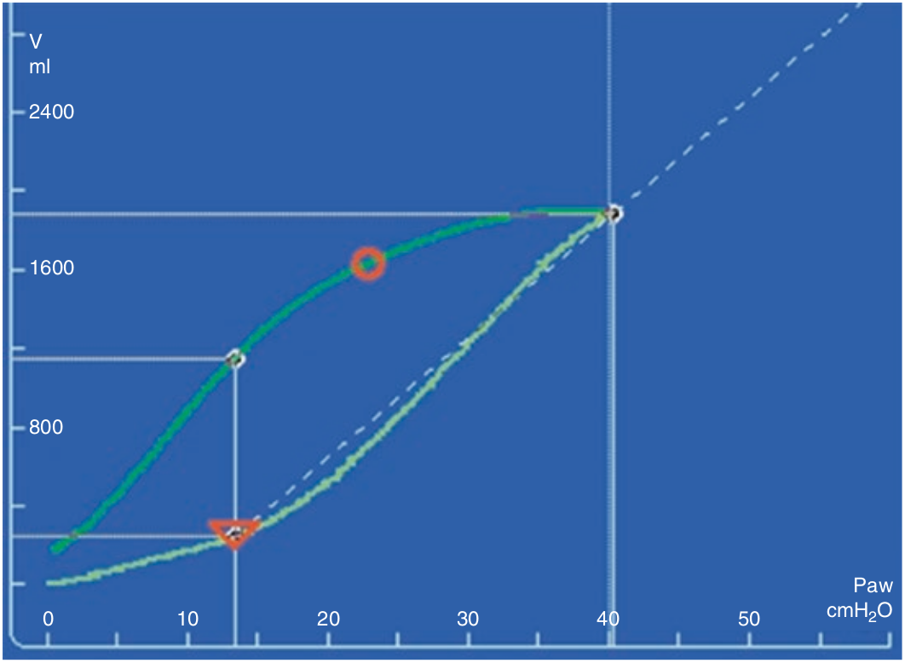

در بیماران ARDS، در تمام طول دم بازگشائی ریه صورت میگیرد. در شروع انبساط ریه شیب لوپ تقریبا افقی است (کمپلیانس کم) زیرا که در اوائل دم ریه بصورت نسبی کولاپس است و حجم ریه سالم کاهش دارد. سپس تغییری در شیب لوپ روی میدهد که از روی اشتباه آن را نقطه زانوی تحتانی نامیده اند. نام صحیح تر آن نقطه حداکثر انحنای تحتانی و یا نقطه حداکثر تغییر کمپلیانس می باشد. از زانوی تحتانی به بعد کمپلیانس بتدریج افزایش می یابد که علت آن بازگشائی ریه و افزایش مقدار ریه باز شده است. گاهی زانوی دیگری در قسمت فوقانی لوپ روی میدهد که به غلط آن را زانوی فوقانی لوپ نامیده اند. نام صحیح تر آن نقطه حداکثر انحنای فوقانی می باشد. بالاتر از این نقطه مقدار بازگشائی کاهش فزاینده ای می یابد و گاز ورودی صرف انبساط بیشتر قسمت هائی که منبسط شده اند می گردد. سرانجام لوپ در قسمت های بالا مجددا افقی می شود. یعنی کمپلیانس کاهش می یابد و از این نقطه به بعد اتساع مفرط شروع می شود. بیشترین مقدار بازگشائی بین دو نقطه انحنای تحتانی و فوقانی روی میدهد.

شاخه صعودی لوپ فشار-حجم نشان دهنده کدام مورد زیر است؟
۱ - در فشارهای پائین کمپلیانس کم است
۲ - تغییر شیب در ریه هائی که استعداد بازگشائی دارند
۳ - افزایش خطی در ریه های فاقد استعداد بازگشائی
۴ - اتساع مفرط در فشارهای بالا
۵ - تمام موارد فوق